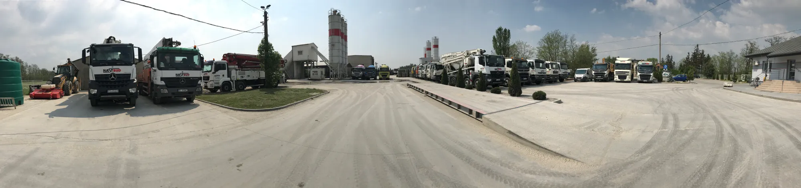
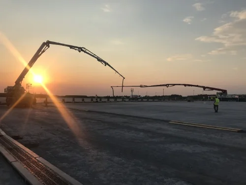
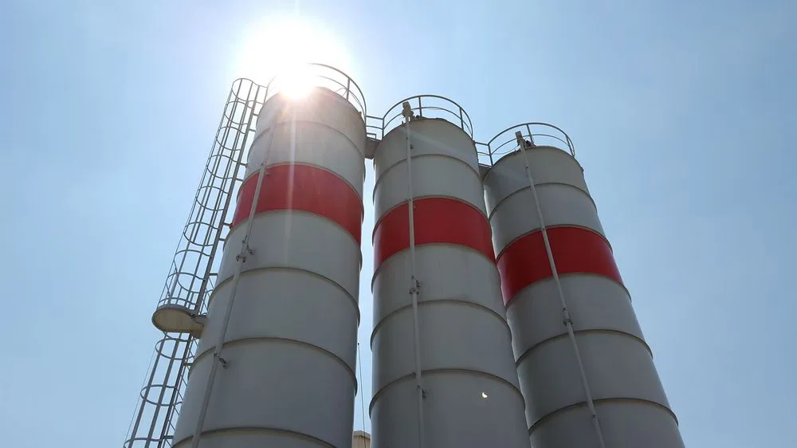
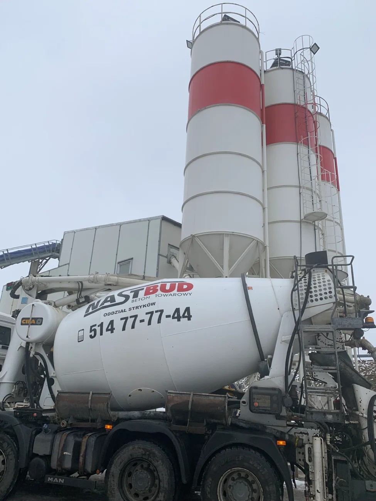
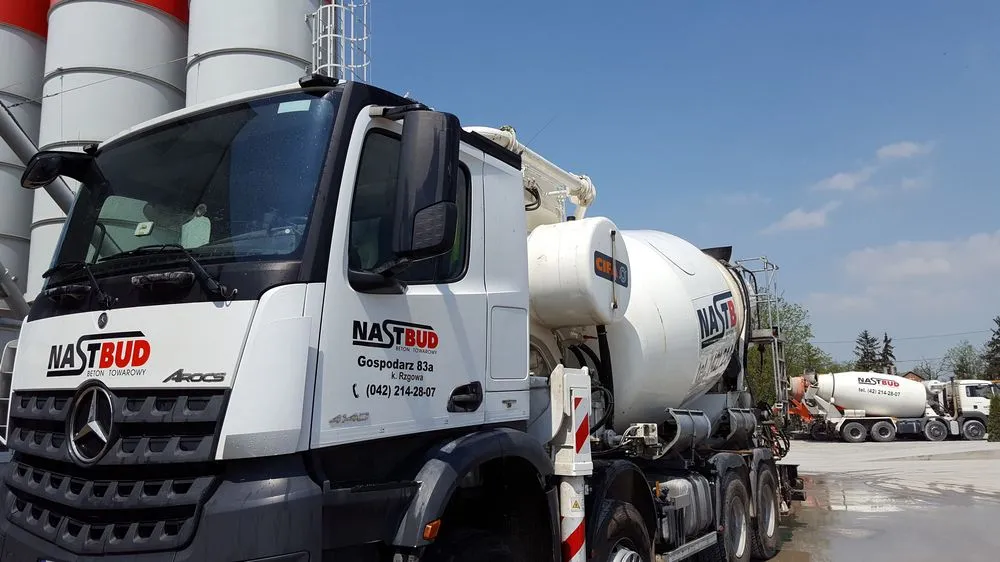
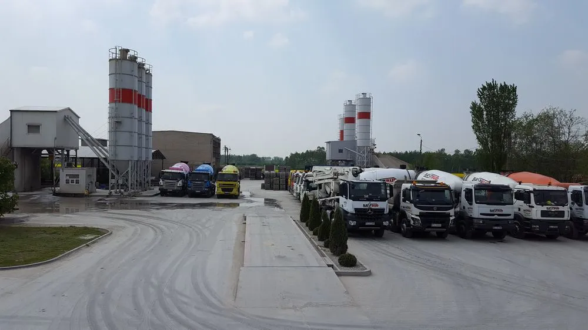
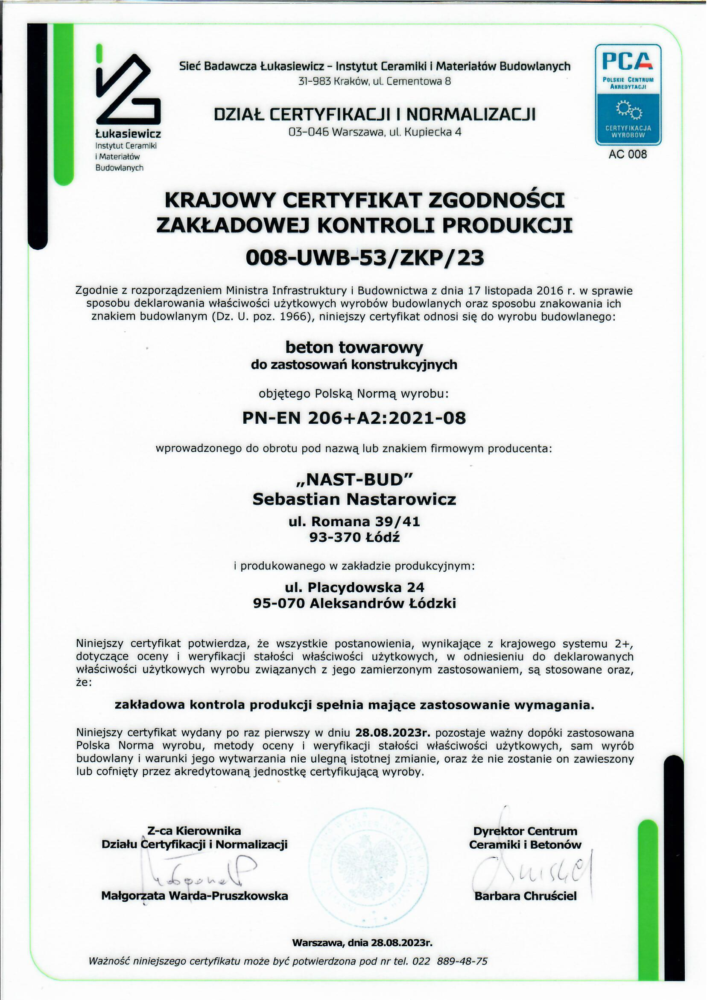
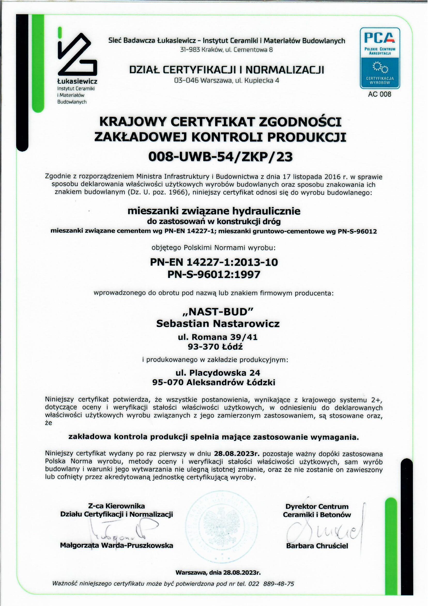
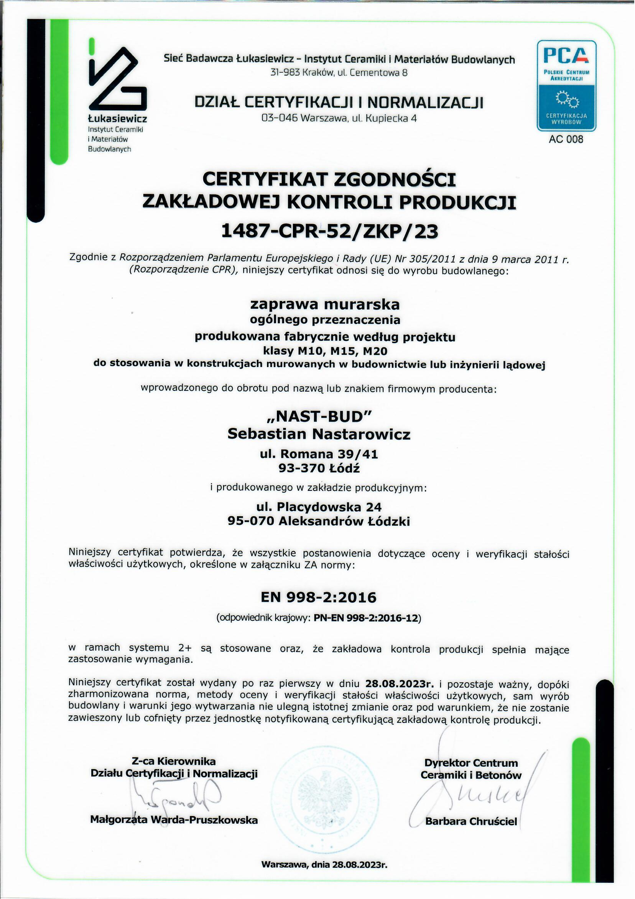

i
Beton towarowy

Pełna gama betonów konstrukcyjnych, od C8/10 do C40/50. Robimy też beton mostowy, posadzkowy, hydrotechniczny, samozagęszczalny i drogowy. Recepturę projektujemy pod konkretną aplikację i porę roku.
Producent betonu towarowego, od 2000 roku
NAST-BUD produkuje beton towarowy w Gospodarzu pod Łodzią od 2000 roku. Mamy trzy wytwórnie, własną flotę mieszarek, pompy do betonu i laboratorium na miejscu. Cały łańcuch, od przyjęcia cementu do odbioru z placu, prowadzimy sami.

NAST-BUD zaczął się w 2000 roku od jednej małej wytwórni w podłódzkim Gospodarzu. Dzisiaj obsługujemy budowy w promieniu kilkudziesięciu kilometrów od Łodzi i dostarczamy beton towarowy każdej klasy, od fundamentów domów po wielkokubaturowe konstrukcje przemysłowe.
Pracujemy w trzech wytwórniach: w Gospodarzu pod Łodzią, w Niesułkowie pod Strykowem oraz w Aleksandrowie Łódzkim. Razem dają nam wydajność do 300 m³ betonu na godzinę. Flota mieszarek i pomp pozwala obsłużyć kilka budów w tym samym czasie, także te z ciągłym, wielogodzinnym zalewem.

Pełna gama betonów konstrukcyjnych, od C8/10 do C40/50. Robimy też beton mostowy, posadzkowy, hydrotechniczny, samozagęszczalny i drogowy. Recepturę projektujemy pod konkretną aplikację i porę roku.

Pompogruszki i samochody‑pompy o różnych wysięgach ramienia. Dowozimy beton tam, gdzie mieszarka nie podjedzie: w wąskie uliczki, na wyższe kondygnacje, do podpiwniczeń. Wynajmujemy zawsze z operatorem.

Pełne bloczki betonowe na fundamenty i ściany piwniczne. Produkujemy je sami, z betonu z naszych wytwórni. Gęstość, wytrzymałość i wymiary trzymamy w wąskich tolerancjach. Można odebrać z placu albo zamówić dostawę.
Potrzebujesz innej receptury albo mieszanki na zamówienie? Zadzwoń, przygotujemy ofertę.






Wytwórnia główna, siedziba.
ul. Rokicińska 156Wytwórnia, obsługa Strykowa i A2.
Niesułków 7BWytwórnia, obsługa zachodniej Łodzi.
ul. KonstantynowskaStała kontrola surowców, ciągłe badania mieszanki na produkcji, comiesięczne badania porównawcze w laboratoriach zewnętrznych. Współpracujemy z liderami chemii budowlanej, dzięki czemu dostarczany przez nas beton spełnia wymogi nawet najbardziej wymagających inwestycji.
Każda partia cementu, kruszywa i domieszek jest badana przed dopuszczeniem do produkcji.
Receptury i konsystencja monitorowane w czasie rzeczywistym przez automatykę wytwórni.
Próbki z każdej dostawy. Badania wytrzymałości na ściskanie po 7 i 28 dniach.
Cykliczna ocena ZKP oraz porównawcze badania w certyfikowanych laboratoriach.



Dokumenty wydane przez Instytut Ceramiki i Materiałów Budowlanych w Warszawie, Polskie Centrum Akredytacji nr AC 209. Każdy z certyfikatów odnawiamy zgodnie z procedurą, dostępne do wglądu w biurze w Gospodarzu.
Beton nie wybacza pośpiechu, a budowa nie czeka. Od dwudziestu pięciu lat robimy jedno, i robimy to dobrze.